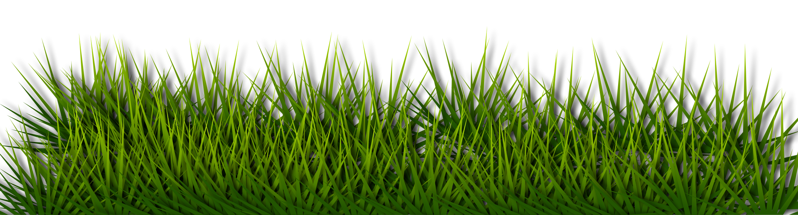
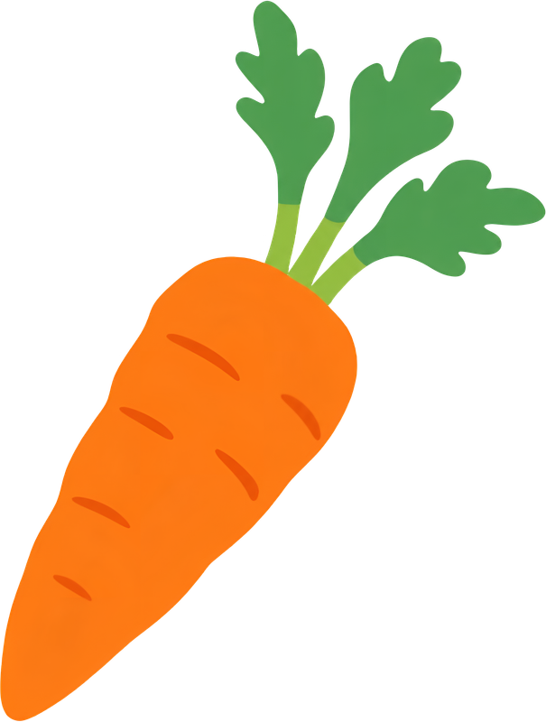
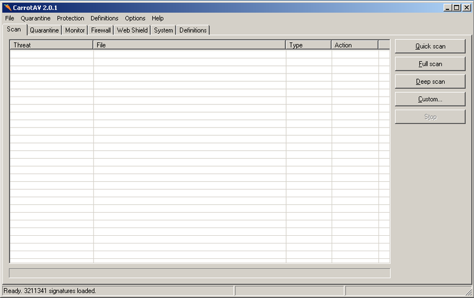
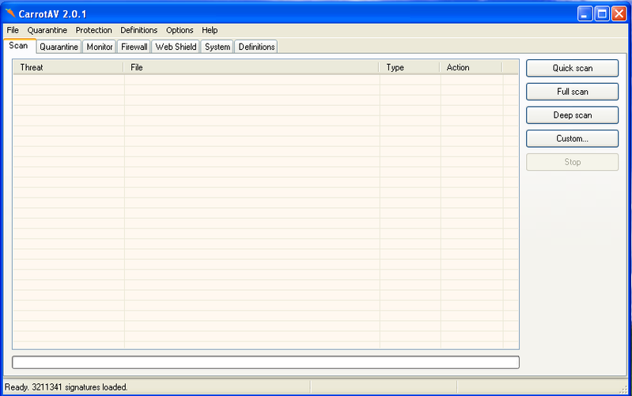

A Windows XP™ and Windows 2000™ Antivirus
Download CarrotAV CarrotAV GithubI made CarrotAV for a reason, to protect old computers.
With the rise of new stuff, people are forgetting about the old stuff.
But CarrotAV is different.
Made with love

